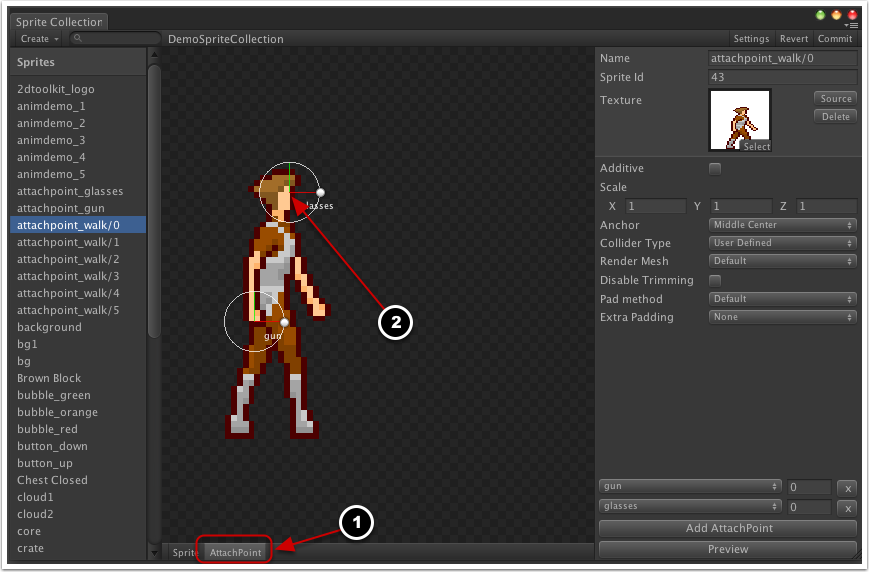
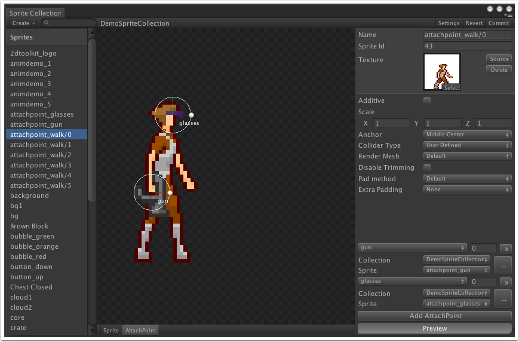
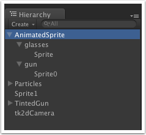
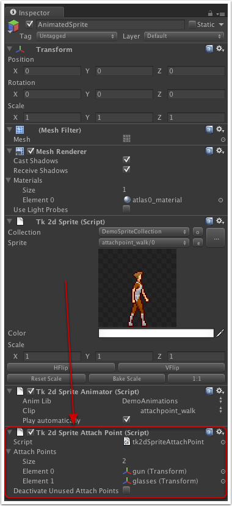

Documentation
Script Reference
Forum
Documentation
Script Reference
Forum
Sprite attach points are set up in the "AttachPoint" tab of the sprite collection editor (1).
attachpoint_editor">
You can add new attach points by clicking on "Add AttachPoint" and you can move and rotate them in relative to the sprite by dragging the handle (2).
Attach points are useful for attaching various things to your sprites. They are attached per sprite, and can be animated. You can preview attached sprites in the ditor by clicking "Preview" and then assigning sprites to each of the attach points.
attachpointeditorpreview">
Attach the tk2dSpriteAttachPoint behaviour to a sprite to start spawning attach points. You normally shouldn't need to change any properties on the behvaiour.

Deactivate Unused Attach Points - The normal behaviour is to ignore missing attach point game objects. Ticking this box will make the behaviour disable missing attach points. This is useful when you need to hide an attach point for a few frames before reactivating it.
The behaviour will automatically create any attach points associated with the sprite as game objects and animate them. You can attach sprites to these attach points as shown in the hierarchy window below.
